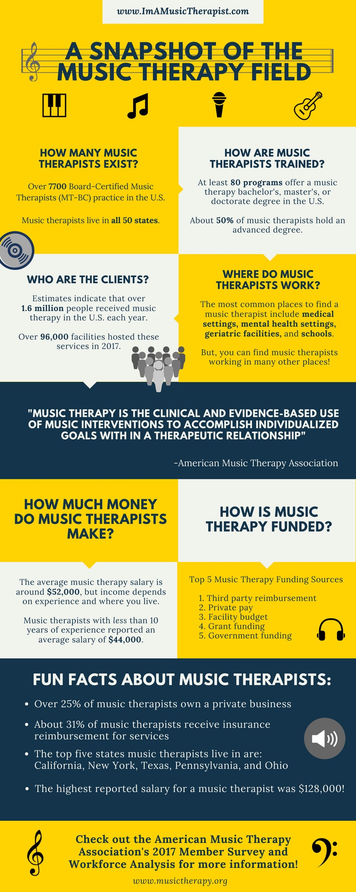
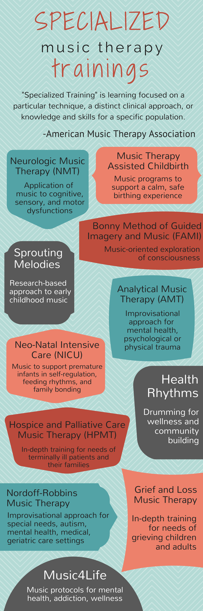
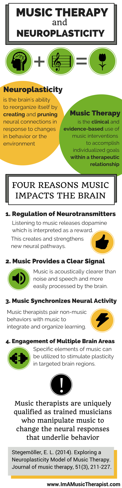
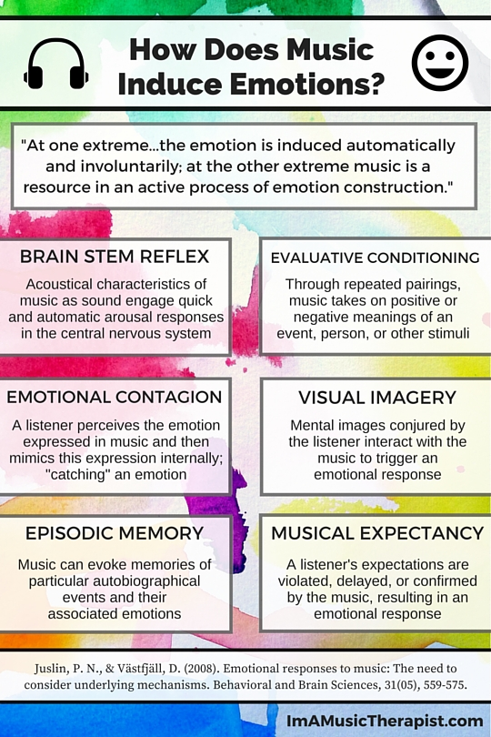
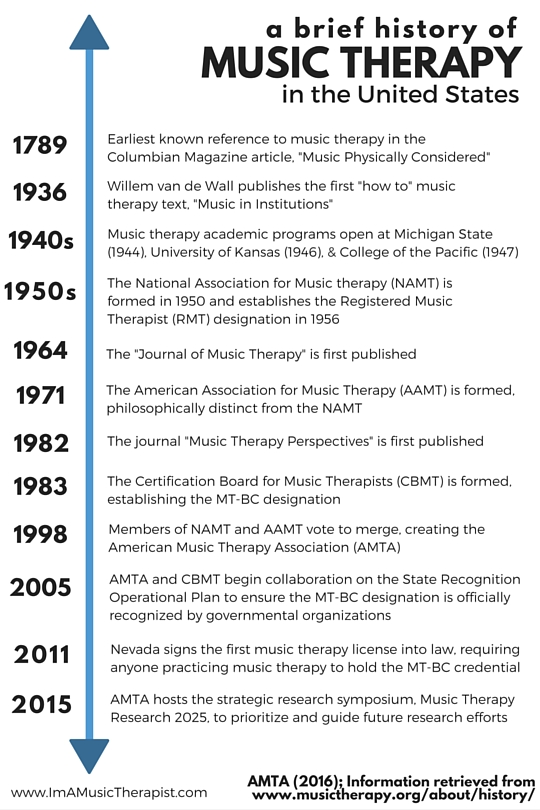
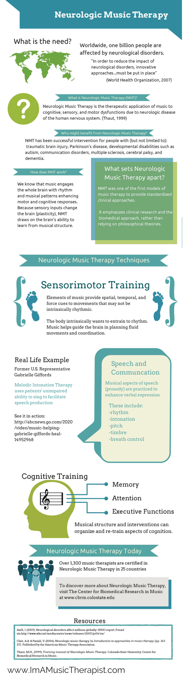

Home
About
Videos
Infographics
Links
MT Resources
Home
About
Videos
Infographics
Links

Music Therapy Workforce Analysis

Specialized Music Therapy Trainings

Music Therapy and Neuroplasticity

How Does Music Induce Emotions?

History of Music Therapy

Neurologic Music Therapy